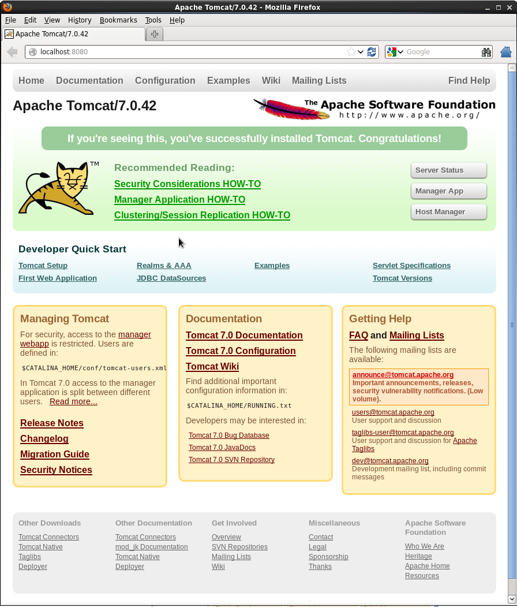

Open a new browser window/tab and go to http://localhost:8080/ to verify Tomcat is running:
If you see this page, Tomcat is running!
See if you can shutdown Tomcat.
Run the shutdown.sh script in the Tomcat bin/ directory:
$ bin/shutdown.sh
Question:
Which Java is Tomcat currently using? (Hint: what was sent to STDOUT when running startup.sh and shutdown.sh?)
Troubleshooting:
Check the logs mostly recently generated in the Tomcat logs for clues about why Tomcat failed to start or stop.
Pay particular attention to what is being reported in Tomcat’s main log file: catalina.out.
Setting $JAVA_HOME, $JAVA_OPTS, $CATALINA_BASE, and $CONTENT_ROOT
Troubleshooting:
If you’re running Tomcat on an instance of Windows OS, you will want to create a setenv.bat file.
We are going to create a file called setenv.sh in the Tomcat bin/ directory to:
allow Tomcat to reference/find the location of $JAVA_HOME and $CATALINA_BASE) during startup and shutdown;
increase the amount of memory allocated to the JVM to enhance performance by setting $JAVA_OPTS; and
add additional settings to the JVM via $JAVA_OPTS to enable more advanced services we will be learning about later on in this workshop.
Create the setenv.sh file.
Using your favorite text editor (gedit, vi, emacs, etc.), create a new file called setenv.sh in the Tomcat bin/ directory:
$ pwd
/usr/local/tds/apache-tomcat-8.0.24
$ cd bin
$ vi setenv.sh
Add the following information and save your setenv.sh file:
#!/bin/sh## ENVARS for Tomcat#export CATALINA_HOME="/usr/local/tomcat"export CATALINA_BASE="/usr/local/tomcat"export JAVA_HOME="/usr"# TDS specific ENVARS## Define where the TDS content directory will live# THIS IS CRITICAL and there is NO DEFAULT - the# TDS will not start without this.#CONTENT_ROOT=-Dtds.content.root.path=/usr/local/tomcat/content
# set java prefs related variables (used by the wms service, for example)JAVA_PREFS_ROOTS="-Djava.util.prefs.systemRoot=$CATALINA_HOME/content/thredds/javaUtilPrefs \
-Djava.util.prefs.userRoot=$CATALINA_HOME/content/thredds/javaUtilPrefs"## Some commonly used JAVA_OPTS settings:#NORMAL="-d64 -Xmx4096m -Xms512m -server -ea"HEAP_DUMP="-XX:+HeapDumpOnOutOfMemoryError"HEADLESS="-Djava.awt.headless=true"## Standard setup.#JAVA_OPTS="$CONTENT_ROOT$NORMAL$MAX_PERM_GEN$HEAP_DUMP$HEADLESS$JAVA_PREFS_ROOTS"export JAVA_OPTS
CONTENT_ROOT is TDS specific, and definds the location of where TDS related configuration files will be stored.
-Xms is the initial and minimum allocated memory of the JVM (for performance).
-Xmx the maximum allocated memory of the JVM (for performance).
-server tells the Hostspot compiler to run the JVM in “server” mode (for performance).
-Djava.awt.headless=true is needed to prevent graphics rendering code from assuming a graphics console exists.
Without this, WMS code will crash the server in some circumstances.
-Djava.util.prefs.systemRoot=$CATALINA_BASE/content/thredds/javaUtilPrefs allows the java.util.prefs of the TDS WMS to write system preferences to a location that is writable by the Tomcat user.
Implement your changes by restarting Tomcat.
Restart Tomcat and examine the output generated to the terminal window by the startup script:
$ ./startup.sh
Using CATALINA_BASE: /usr/local/tds/apache-tomcat-8.0.24
Using CATALINA_HOME: /usr/local/tds/apache-tomcat-8.0.24
Using CATALINA_TMPDIR: /usr/local/tds/apache-tomcat-8.0.24/temp
Using JRE_HOME: /usr/local/tds/jdk1.8u51
Using CLASSPATH: /usr/local/tds/apache-tomcat-8.0.24/bin/bootstrap.jar:/usr/local/tds/apache-tomcat-8.0.24/bin/tomcat-juli.jar
Question:
Did you notice any difference in the what is being reported to STDOUT during startup?
Take a look at the running Tomcat process to see the new $JAVA_OPTS settings:
Note:
For more information on the environment variable prerequisites used by Tomcat, consult ${tomcat_home}/bin/catalina.sh (or catalina.bat) file.
Question:
What allows us to create the setenv.sh file and have its contents read? (Hint: have a look at the catalina.sh file in the Tomcat bin/ directory).
Troubleshooting
Do not forget include the m in your -Xms and -Xmx settings.
You may have allocated too much memory for the JVM settings if Tomcat fails to start and you get the following error reported in the Tomcat log catalina.out:
Error occurred during initialization of VM
Could not reserve enough space for object heap
Likewise, if there is an error with your JVM memory allocation syntax in the setenv.sh file, it will be reported to catalina.out:
Error occurred during initialization of VM
Incompatible minimum and maximum heap sizes specified
If you intend to use WMS and see something like the following in reported in catalina.out:
May 25, 2010 6:28:22 PM java.util.prefs.FileSystemPreferences syncWorld
WARNING: Couldn't flush system prefs: java.util.prefs.BackingStoreException: /etc/.java/.systemPrefs/org create failed.
You will need to set the java.util.prefs.systemRoot system property in $JAVA_OPTS to a location that is writable by the user that Tomcat, e.g.:
#!/bin/sh## ENVARS for Tomcat and TDS environment#JAVA_HOME="/usr/local/tds/jdk1.8u51"export JAVA_HOME
JAVA_OPTS="-Xmx4096m -Xms512m -server -Djava.awt.headless=true -Djava.util.prefs.systemRoot=$CATALINA_BASE/content/thredds/javaUtilPrefs"export JAVA_OPTS
CATALINA_BASE="/usr/local/tds/apache-tomcat-8.0.24"export CATALINA_BASE